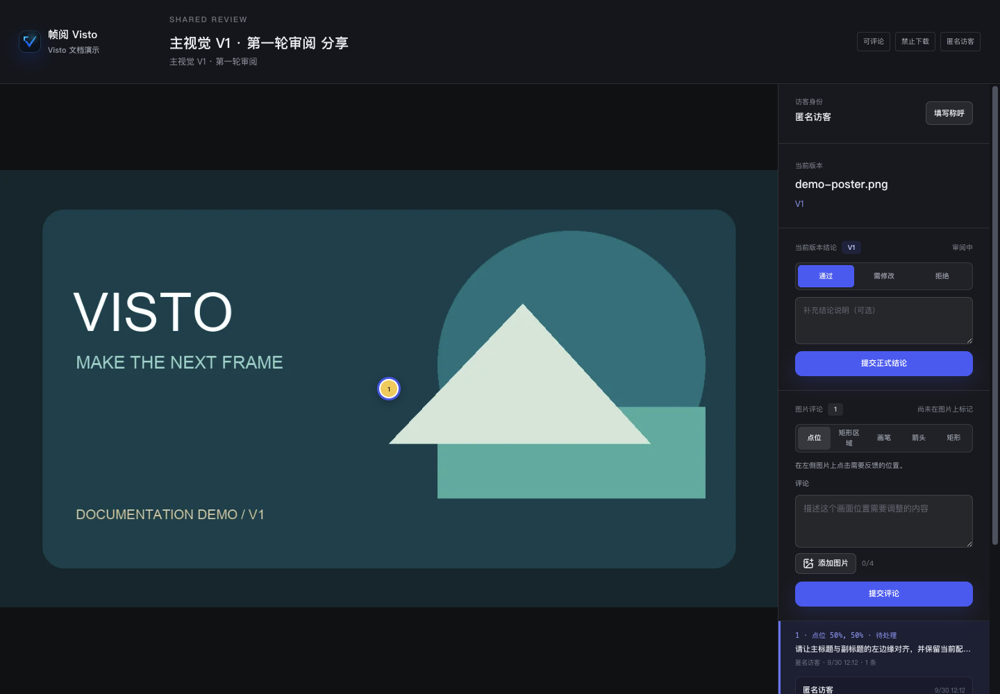

Feedback and decisions
Useful feedback describes the location, the issue, and the requested change.
Video comments
Pause at the relevant moment. Choose a time-based comment and capture the current time. For a longer passage, select a time range with a start and end. Submit and click the saved comment to check its position.
Example: “00:12.400–00:15.000: subtitles appear before the voice-over. Move them to the start of the first sentence.”
Image comments
Use a point for one location or a region for an area. Available arrows, brush, and rectangle tools can clarify the change. Add the marker first, then write the explanation. Check the saved marker.


Attachments are available only when enabled and backed by suitable storage. An authorized person can resolve a thread after addressing it. Resolved feedback does not automatically approve the whole review.
Formal decisions
Choose Approve, Changes requested, or Reject, then explain the result. The review combines these decisions according to its approval rule.
Share visitors can submit a decision for the fixed version when feedback is enabled and the review is open. Closing share feedback disables both new comments and new visitor decisions. An anonymous visitor's identity is recorded through the share session.